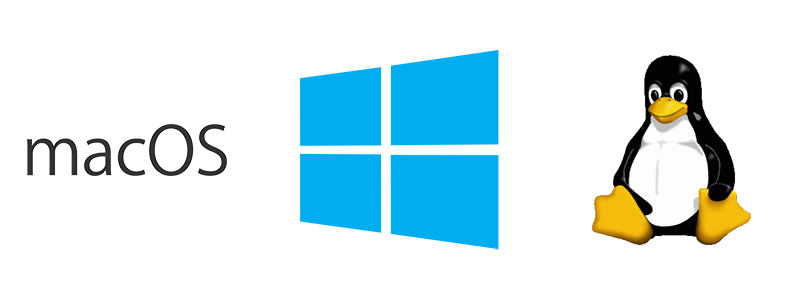
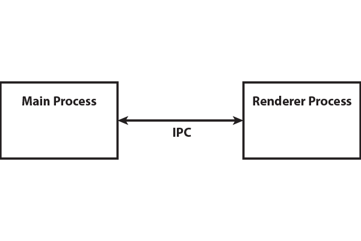
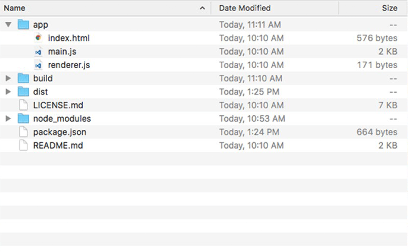

Electron: Beginner to Pro
Build Cross Platform Desktop Apps using Github’s Electron
@chrisgriffith
What is Electron?
- Released in July 2013 by Cheng Zhao
- Foundation for GitHub Atom Editor
Built with Electron
electronjs.org/appsElectron's Features
- Automatic updates
- Native menus & notifications
- Crash reporting
- Debugging & profiling
- Windows installers
- just a partial list…
Platform Support
How does Electron Work?
UI?
Windows
Application Menu
Contextual Menus
Inter-Process Communication
Inter-Process Communication
Native Dialogs
Dialog Types
- File Open
- File Save
- Message Box
- Error Box
Dialog Properties
- openFile
- openDirectory
- multiSelections
- createDirectory
- showHiddenFiles
- promptToCreate (Windows Only)
Message Boxes
Dialog Types
- info
- error
- question
- none
WebContents Events
- before-input-event
- certificate-error
- context-menu
- crashed
- cursor-changed
- destroyed
- devtools-closed
- devtools-focused
- devtools-opened
- devtools-reload-page
- did-change-theme-color
- did-fail-load
- did-finish-load
- did-frame-finish-load
- did-get-response-details
- did-get-redirect-request
- did-navigate
- did-navigate-in-page
- did-start-loading
- did-stop-loading
- dom-ready
- found-in-page
- login
- media-started-playing
- media-paused
- new-window
- page-favicon-updated
- paint
- plugin-crashed
- select-client-certificate
- select-bluetooth-device
- update-target-url
- will-attach-webview
- will-navigate
- will-prevent-unload
Debugging Your Electron Application
- Chromium’s Dev Tools
Debugging Renderer Process
- Chromium’s Dev Tools
Debugging Main Process
- VS Code's Tools
- node-inspector
Devtron
An Electron DevTools extension to help you inspect, monitor, and debug your app.
Testing with Spectron
Building Your Application
Adjusting your Build Directories
| Build Platforms | Descriptions |
|---|---|
| --mac, -m, -o, --macos | Build for macOS |
| --win, -w, --windows | Build for Windows |
| --linux, -l | Build for Linux |
| Build Architectures | Descriptions |
| --x64 | Build for x64 |
| --ia32 | Build for ia32 |
App Icons
- 16px
- 32px
- 128px
- 256px (OS X 10.5+)
- 512px (OS X 10.5+)
- 1024px (OS X 10.7+)
Configuring the macOS DMG
Configuring the Windows Installer
Auto-Updating
Built-In
| Platform | Update Method |
|---|---|
| macOS | Squirrel.Mac |
| Windows | Squirrel |
| Linux | None |
Electron Forge
A complete tool for building modern Electron applications.
Thank You!
| Chris Griffith | |
| San Diego, CA | |
| @chrisgriffith | |
| http://chrisgriffith.wordpress.com | |
| https://github.com/chrisgriffith |